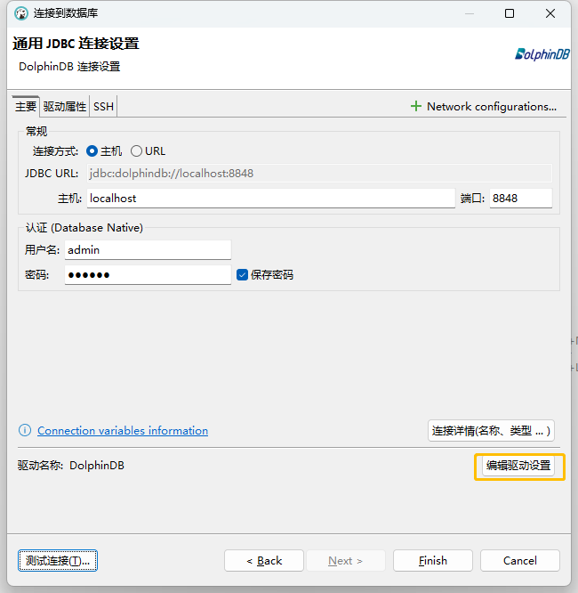
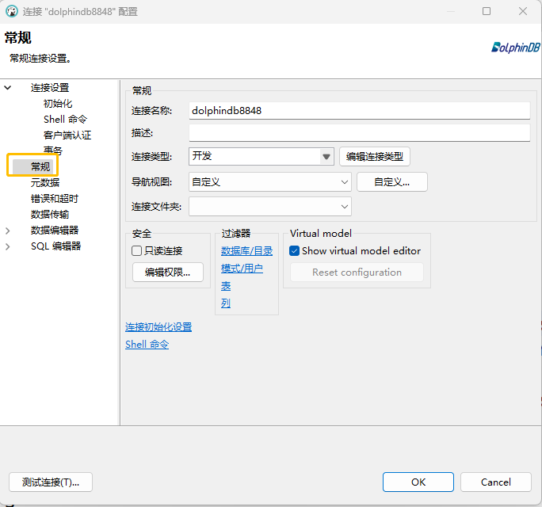
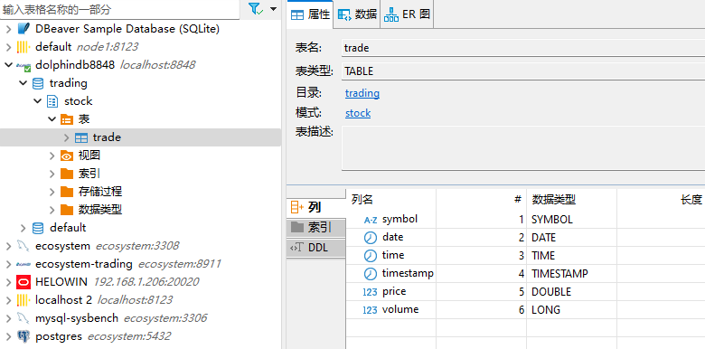
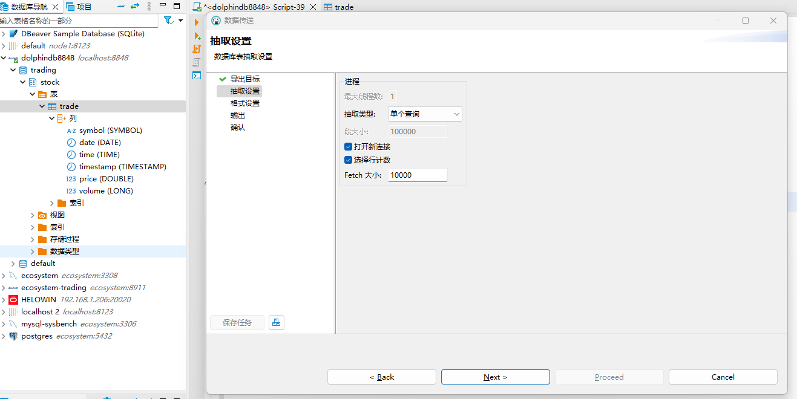

使用 DBEaver 连接 DolphinDB
在日常的数据开发、分析和数据库运维中，一款优秀的 IDE 能够极大地提升工作效率。DBEaver 是一款由 Java 编写的一站式跨平台连接器，其社区版本已能支持连接近百种数据库，受到广大开发者的喜爱。近期，
DolphinDB 与 DBeaver 团队共同努力，发布了 DBeaver 24.2.1 版本，新增 DolphinDB 驱动程序，支持在 DBeaver 中访问和管理 DolphinDB。
本文基于 DBeaver 24.2.1，DolphinDB 3.00.0 版本编写， 用于指导用户如何通过 DBEaver 连接和操作 DolphinDB。
1. DBeaver 简介及安装准备
DBeaver 是一款开源的数据库管理工具，广泛支持多种数据库，包括关系型、时序、 图、键值数据库等。它为数据库管理员和开发者提供了丰富的功能，如数据库连接管理、SQL 编辑器、数据可视化、查询结果的导出和分析、数据迁移，以及数据库的结构查看和修改等。DBeaver 支持在多种平台（Mac, Linux, windows）上运行。其直观的用户界面和丰富的功能，极大地提升了数据应用与开发效率，受到了广大开发者的喜爱。
安装 DolphinDB
DolphinDB 的版本需大于等于 3.00.0。这是因为 DBeaver 使用 JDBC DatabaseMetaData 接口中的 getCatalogs，getSchemas，getColumns 等相关方法访问数据库，而 DolphinDB 2.0 版本并没有实现 catalog。安装请参阅部署文档。
安装 DBeaver Community
点击Download 下载 DBeaver Community 版本。根据平台选择对应版本的安装包，版本需要 >= 24.2.1。
了解 catalog
DBeaver 访问的分布式库表需纳入 catalog 管理。若尚未了解 catalog，请先阅读文档 数据目录 。以下是在使用 DBEaver 时可能用到的函数。
| 函数 | 作用 | 示例 |
|---|---|---|
| createCatalog(catalog) | 创建 catalog |
创建 catalog test |
| createSchema(catalog, dbUrl, schema) | 把已有的数据库添加到指定的 catalog/schema 中 |
|
2. 配置并连接 DolphinDB
本节介绍如何通过 DBEaver 连接 DolphinDB、如何离线配置 JDBC，以及如何进行连接配置。
2.1 创建连接
安装完成后, 按图示创建 DolphinDB 数据库连接。

1. 创建连接
点击 Next 创建连接，输入主机、端口、用户名、密码这些基本的连接信息。
2. JDBC 配置及连接测试
点击测试连接。若本地没有 DolphinDB JDBC 驱动，DBEaver 会自动从互联网进行下载。成功连接会提示”已连接“，若失败请检查 ip 、端口、用户名、密码的正确性以及防火墙。
离线环境配置 JDBC
可以手动下载 DolphinDB JDBC（版本 >=3.00.1.0)，请选择 jar-with-dependencies 后缀的 jar 包。下载完成后，手动添加 JDBC 驱动。
在连接设置页面，点击 编辑驱动设置 → 库 → 添加文件，添加所下载的 jar 包。也可以通过这种方式更新DolphinDB JDBC 版本。更新版本的jdbc会实现更多的接口，使得DBEaver DolphinDB Connector 可以使用更多的功能。
2.2 连接配置
在上述界面中选择 高级参数 → Queries → Set active database，填入属性值
use catalog ?至此，配置工作完成。另外，在常规->连接名称 选项中，可以设置连接名称。可以输入一个具有辨识度的名称，以便工程化管理多个数据库。
3. DolphinDB Driver 使用案例
目前的 DolphinDB Driver 支持以下功能，可以满足数据开发的需求。
- 查看分布式库表结构
- 查询数据
- 执行 DolphinDB 脚本
- 导出分布式库表数据
以下是一个简单的使用案例，以及给出一些使用建议。
3.1 查看分布式库表结构
分布式库表需要纳入 catalog 管理。分别创建 catalog, schema, 及分布式库表，并写入数据。右键数据库连接 → SQL 编辑器，在 SQL 编辑器中，点击 按钮执行脚本。
login("admin", "123456")
createCatalog("trading")
go
use catalog trading
create database stock
partitioned by VALUE(2019.11.07..2019.11.08), HASH([SYMBOL,25])
engine='TSDB'
go
create table stock.trade(
date DATE,
time TIME,
timestamp TIMESTAMP,
symbol SYMBOL,
price DOUBLE,
volume LONG,
)
partitioned by date, symbol
sortColumns=["symbol", "timestamp"]
执行成功后，右键 DolphinDB连接 -> Refresh，就可以看到新建的库表信息。
接着尝试写入一些数据。
n = 10000
date = take(2019.11.07 2019.11.08, n)
time = (09:30:00.000 + rand(int(6.5*60*60*1000), n)).sort!()
timestamp = concatDateTime(date, time)
price = 100+cumsum(rand(0.02, n)-0.01)
volume = rand(1000, n)
symbol = rand(`AAPL`FB`AMZN`MSFT, n)
data = table(date, time, timestamp, symbol, price, volume).sortBy!(`symbol`timestamp)
tableInsert(stock.trade, data)注意：
- 你可以通过 createSchema 函数将已有的 DFS 表加入到某个 schema 中。
- 在“查看表”菜单中的“数据”子选项会对 DFS 表的数据进行逻辑分页查询，执行全表扫描并在 DBeaver 的进程中缓存数据。因此，不建议对 DFS 表使用此选项。
3.2 执行 SQL 查询
在SQLEditor 中，执行SQL查询。
select first(price) as open, max(price) as high
, min(price) as low, last(price) as close, sum(volume) as volume
from stock.trade
group by symbol, date, bar(time, 5*60*1000) as barStart在数据窗格中可以进一步对结果数据进行排序过滤，分页查看。需要注意的是，当前 DolphinDB Driver 使用的是 DBeaver Generic JDBC 连接器，其分页查询采用逻辑分页。这意味着 DBeaver 会从 DolphinDB 中查询所有结果数据，并将其缓存到 DBeaver 的内存中。因此，请避免查询大量数据（或在 SQL 中未通过 TOP/LIMIT 进行限制），否则可能会导致 DBeaver 出现 “Java heap out of memory” 错误，甚至卡死。
如果不想手动编写 SQL 语句，可以通过右键点击表名，选择“生成 SQL” → “SELECT” 来自动生成查询 SQL 语句。
3.3 执行 DolphinDB 脚本
除 SQL 外，DolphinDB Driver 还支持在编辑器中执行脚本语句，进行一些简单的数据分析或运维工作。
- 矩阵计算
m = select first(price) as open, max(price) as high , min(price) as low, last(price) as close, sum(volume) as volume from stock.trade group by symbol, date, bar(time, 5*60*1000) as barStart U,s,v = matrix(m[,3:]).svd() s - 集群运维
getSessionMemoryStat() clearAllCache() setMaxConnections(1024)
对于脚本执行，DBeaver 会针对有无返回结果（ execute方法的返回值 true/false) 进行设计。如上文中的 U,s,v =
matrix(m[,3:]).svd() 没有返回结果，意味着 DBeaver 不会展示 U, s, v 的值。而运行变量 s
可以查看具体的值：
如果想批量执行多行脚本需要点击按钮 。
3.4 导出数据至 csv
如果想要导出一些样例数据，可以右键对应的表 → 导出数据 。
通常按导航的默认设置点击 “Next” 即可完成导出。至此，本文对如何通过 DBeaver 连接 DolphinDB，并在其中查看库表结构，读取数据，编写脚本等操作进行了详细的介绍。通过阅读本文，您可以在 DBeaver 中对 DolphinDB 有效地管理和操作数据 。
4. 小结
目前 DolphinDB Driver 实现了基本的使用功能，可以满足 DolphinDB 用户的查看库表结构、查询数据、编写脚本的需求。当然，目前基于 Generic JDBC 的连接器实现存在一定的局限性。例如某些类型的变量无法直接查看。这是因为在 JDBC 的 ResultSet 接口设计中，将数据库的返回定义为一个表。
而 DolphinDB 脚本语言做为一门多范式编程语言支持多种数量结构。针对这个冲突，DolphinDB JDBC 做了一定程度的包装（Wrap)，将 scalar，vector, matrix 包装为一个表。目前不支持 dict 结构的包装，因此无法查看 dict 类型的数据。
在后续版本中，我们会进一步地完善 DolphinDB Driver 的功能，提升用户体验。